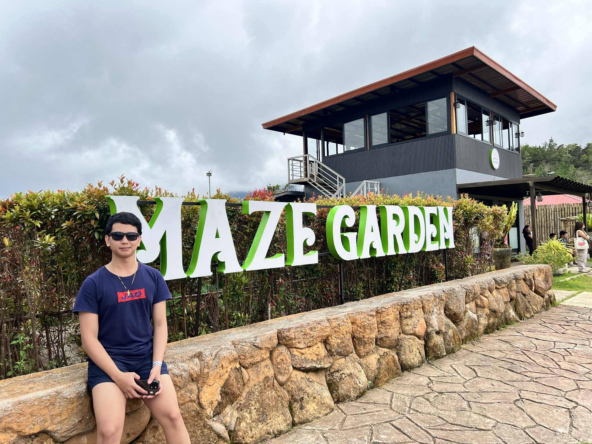

2017–2023
Completed my secondary education and discovered my passion for technology and information systems.
2023–present
Currently pursuing my degree at Bukidnon State University, focusing on web development and software engineering. Third year student specializing in full-stack development.
Post-Graduation
I aspire to become a full-stack web developer and contribute to innovative tech solutions that make a positive impact in society.
Strategic Thinking & Problem Solving
Chess teaches me to think multiple steps ahead and analyze different solutions before committing to code.
Teamwork & Communication
Playing as a team taught me the importance of collaboration and clear communication in group projects.
Discipline & Focus
Martial arts instilled in me the discipline needed for consistent learning and mastering complex technical skills.
Persistence & Patience
Long hikes taught me that reaching goals requires consistent effort, just like debugging and learning new technologies.
Optimization & Efficiency
Running teaches me to optimize my efforts for maximum performance, a principle I apply to clean and efficient code.